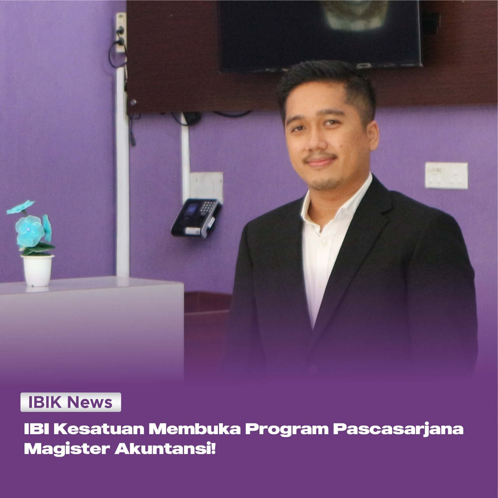

Kamis, 09 Juni 2022
Kabar gembira untuk kamu yang akan melanjutkan pendidikan jenjang Magister (S2)! IBI Kesatuan resmi membuka Program Pascasarjana Magister Akuntansi, lho! Nah, kira-kira apa saja keunggulan Magister Akuntansi? Apa saja konsentrasinya? Bagaimana cara mendaftarnya? Yuk, simak ulasan dibawah ini!
Pascasarjana IBI Kesatuan
Magister Akuntansi ditujukan untuk mengembangkan keahlian mahasiswa dalam bidang akuntansi, kemampuan berpikir kritis. Program ini tepat bagi kamu yang tertarik untuk meningkatkan keahlian akuntansi terutama untuk aspirasi karir kamu! Kurikulum program studi Magister Akuntansi di IBI Kesatuan sendiri terdapat dua konsentrasi, yaitu Akuntansi sektor Publik dan Akuntansi Keuangan dan Pasar Modal.
Keunggulan Magister Akuntansi IBI Kesatuan
Jangan salah, meskipun terbilang baru, Magister Akuntansi di IBI Kesatuan memiliki banyak keunggulan, lho! Beberapa diantaranya yaitu:
1. Adanya pengajar profesional baik dari akademisi maupun praktisi
2. Kurikulum yang mendukung untuk mendapatkan ujian sertifikasi Chartered Accountant (CA)
3. Memfasilitasi mahasiswa dalam berbagai kegiatan penelitian dan pengabdian masyarakat
4. Mendukung keikutsertaan mahasiswa dalam kompetisi ilmiah
5. Tersedianya ICT-Based Accounting Practice
6. Bridging program yang komprehensif untuk meningkatkan kemampuan mahasiswa sebelum memasuki perkuliahan reguler
7. Afiliasi dengan Ikatan Akuntan Indonesia (IAI)
8. Tersedianya dukungan formasi pembimbing tugas akhir (Tesis) yang mampu meningkatkan hasil penelitian mahasiswa
Konsentrasi Magister Akuntansi IBI Kesatuan
Magister Akuntansi di IBI Kesatuan menawarkan 2 konsentrasi yang dapat kamu pilih, yaitu konsentrasi Akuntansi Sektor Publik serta Akuntansi Keuangan dan Pasar Modal. Apa sih yang akan dipelajari di konsentrasi Akuntansi Sektor Publik dan Akuntansi Keuangan Pasar Modal?
Akuntansi Sektor Publik merupakan salah satu cabang ilmu akuntansi yang diterapkan pada organisasi publik seperti pemerintah pusat maupun daerah, lembaga maupun instansi pemerintah, dan lembaga sektor publik lainnya seperti yayasan, organisasi kemasyarakatan, serta partai politik.
Sedangkan Akuntansi Keuangan dan Pasar Modal merupakan salah satu cabang ilmu akuntansi yang membahas tiga keputusan keuangan yaitu menyangkut keputusan investasi, keputusan pendanaan, dan kebijakan dividen.
Tertarik untuk berkuliah di program Pascasarjana Magister Akuntansi IBI Kesatuan? Kamu bisa mendaftar dengan mengunjungi website pendaftaran.ibik.ac.id dan membayar biaya pendaftaran sebesar Rp. 500.000,- serta biaya matrikulasi sebesar Rp. 1.000.000,- per-mata kuliah (biaya matrikulasi khusus bagi lulusan non-akuntansi).
Untuk informasi lebih lanjut, silahkan hubungi Admin IBIK melalui WhatsApp:
Admin 1 (Cici) : 0857-1111-1210
Admin 2 (Ezra) : 0816-1700-0489
Admin 3 (Cindy) : 0811-1178-005